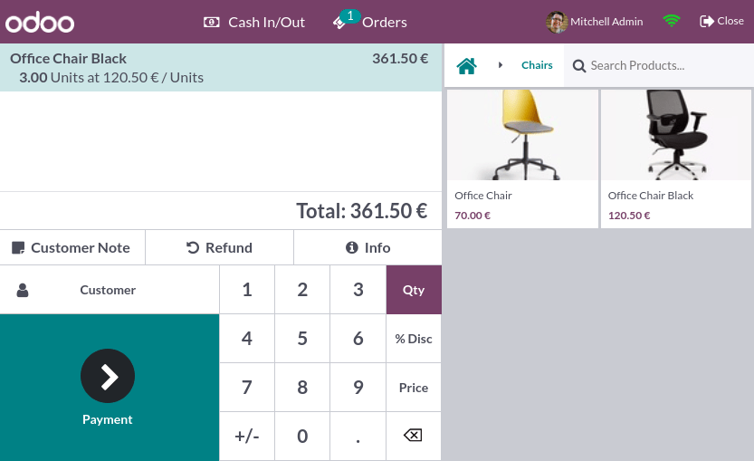

Point of Sale¶
With Odoo Point of Sale, run your shops and restaurants easily. The app works on any device with a web browser, even if you are temporarily offline. Product moves are automatically registered in your stock, you get real-time statistics, and your data is consolidated across all shops.
Start a session¶
From the POS dashboard, click New Session, and at the Opening Cash Control screen, click Open Session to start a POS session, or click Continue Selling if the session is already opened.
Note
Multiple users can be logged into the same session at the same time. However, the session can only be opened once on the same browser.
Sell products¶
Click on products to add them to the cart. To change the quantity, click Qty and enter the number of products using the keypad. To add a discount or modify the product price, click respectively % Disc or Price and enter the amounts.
Once an order is completed, proceed to checkout by clicking Payment. Select the payment method, enter the received amount, and click Validate. Click New Order to move on to the next customer.
Tip
You can use both
,and.on your keyboard as decimal separators.Cash is selected by default if you enter the amount without choosing a payment method.
Note
The system can only load a limited number of products for effective opening. Click Search more if the desired product is not loaded automatically.
Set customers¶
Registering your customer is necessary to collect their loyalty points and grant them rewards, automatically apply the attributed pricelist, or generate and print an invoice.
You can create customers from an open POS session by clicking , and filling in the contact information. You can also create customers from the backend by going to and clicking New. Then, fill in the information and save.
To set a customer during an order, access the list of customers by clicking Customer on the POS interface. You can also set a customer at the payment screen by clicking Customer.
Customer notes¶
You can add customer notes about specific products directly from an open POS session. For instance, to provide cleaning and maintenance tips. They can also be used to track a customer’s particular request, such as not wanting the product to be assembled for them.
To do so, select a product and click Customer Note on the pad. Doing so opens a pop-up window in which you can add or modify content for the note.
Note
Product notes from an imported SO are displayed identically in the cart.

Customer notes appear on customers’ receipts and invoices similarly to how they appear in the cart, under the related product.

Return and refund products¶
To return and refund a product,
start a session from the POS dashboard;
click Refund and select the corresponding order;
select the product and the quantity to refund using the keypad;
click Refund to go back to the previous screen;
once the order is completed, click Payment to proceed to the refund;
click Validate and New Order to move on to the next customer.

Note
You can filter the orders list by Receipt Number, Date or Customer using the search bar.
You can also refund a product by selecting the returned product from an open session, and setting a negative quantity that equals the number of returned products. To do so, click Qty and +/-, followed by the quantity of returned products.
Close the POS session¶
To close your session, click Close in the upper right corner of your screen; doing so opens the Closing Control pop-up screen. From this screen, you can retrieve various information:
the number of orders made and the total amount made during the session;
the expected amounts grouped by payment method.
Before closing this window, count your cash using the calculator icon. Doing so opens a pop-up window that computes the total amount in the cash drawer depending on the coins and bills counted and added manually. Then, click Confirm or Discard to close the window. The computed amount is set in the Counted column, and the Money Details are specified in the Notes section.

Once you are done controlling the amounts, click Close Session to close and go back to the POS dashboard.
Note
You can let the session open by clicking Backend or abort and keep selling by clicking Discard.
Depending on your setup, you might only be allowed to close a session if the expected cash revenue equals the counted cash. To close it anyway, click Ok on the Payments Difference screen.
Tip
It is strongly advised to close your POS session at the end of each day.
To look at all your previous sessions, go to .